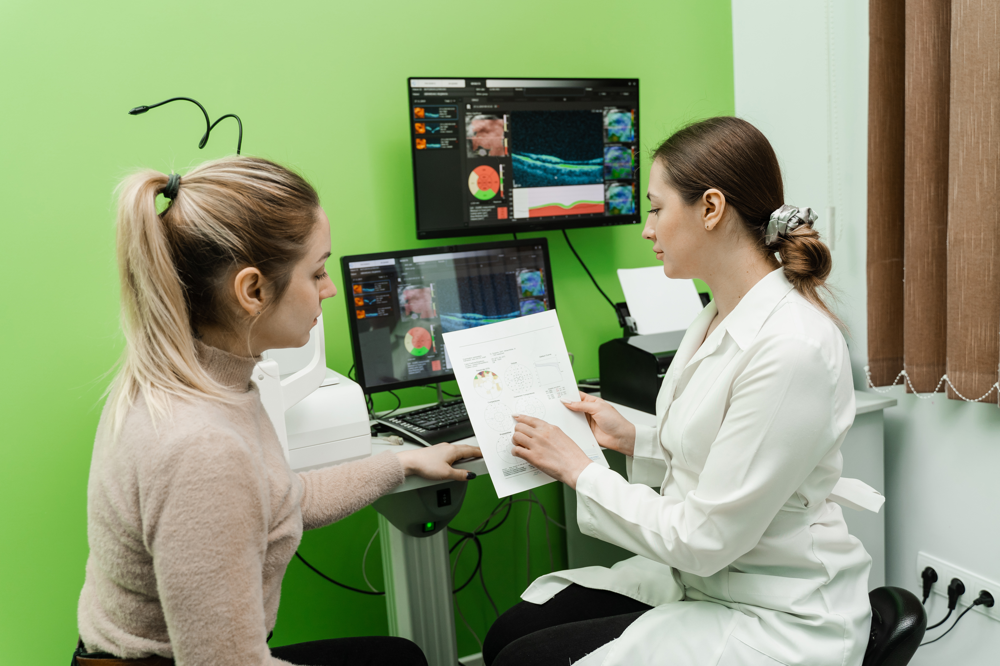
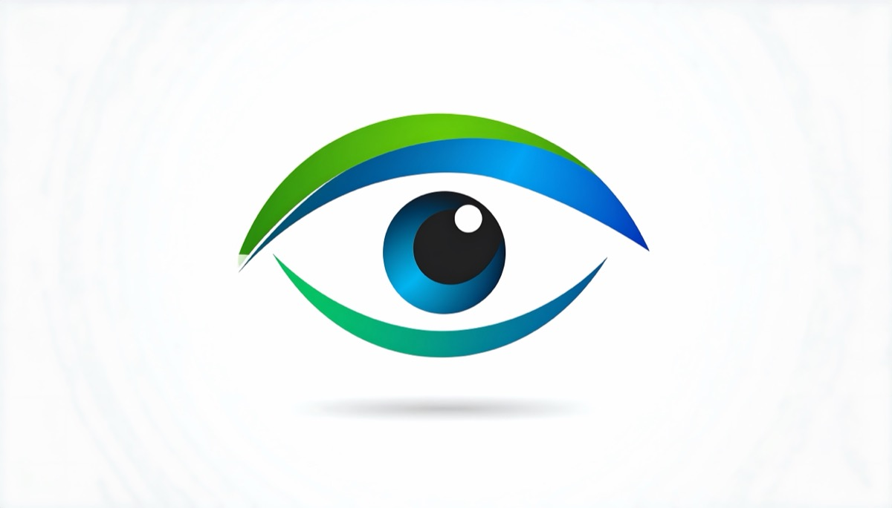
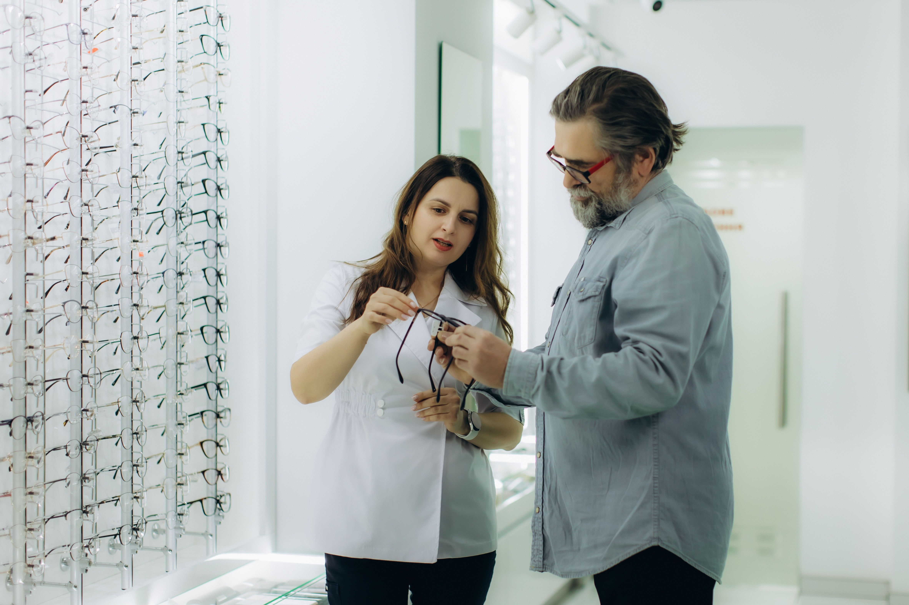

About Vcare Opticals
For over 25 years, our clinic has been a trusted provider of eye‑care services in the community. Located at 21
Florence Avenue, Razole. We pride ourselves on offering friendly, dependable, and expert optical care. Our
mission is to help every patient achieve clear, comfortable vision through personalised service and the latest
technology in optometry.
At Vcare Opticals, we offer a wide range of services including routine vision tests, prescription lenses,
contact lens fittings, dry‑eye treatment, and advanced diagnostic screening for conditions such as glaucoma,
cataracts, and macular degeneration. We also provide stylish eyewear, sunglasses, and specialty lenses to suit
both functional and fashionable needs. Our team is passionate about educating our patients, ensuring they
understand their eye health and have all the guidance they need for ongoing care.
In addition, we are proud to introduce our new online booking system, allowing customers to schedule eye tests
and consultations at their convenience. Appointments can still be made via phone for those who prefer personal
assistance.
At Vcare Opticals, our promise is to deliver exceptional eye‑care services with compassion, accuracy, and
dedication. Whether you are experiencing vision concerns, need a new set of frames, or simply want an eye
check‑up, our experienced staff are here to support you.
Our new vision care technologies
- LASIK Vision Correction Technology: Vcare Opticals now offers access to LASIK consultation
services, a modern solution for correcting common vision problems such as short‑sightedness, long‑sightedness,
and astigmatism. Our optometrists provide detailed pre‑assessment, guidance, and post‑procedure care to ensure
patient safety and confidence throughout the process.
- Digital Eye Examination System: Vcare Opticals now uses digital eye testing equipment that
provides faster and more accurate vision assessments compared to traditional eye charts. These systems help
detect vision problems early and improve prescription accuracy.
- Optical Coherence Tomography (OCT): OCT is an advanced scanning technology that creates
detailed cross‑section images of the retina. It helps detect serious eye conditions early and is especially
useful for monitoring eye health in older adults.
- Blue Light & Digital Eye Strain Assessment: With increased screen usage, Vcare Opticals now
offers digital eye strain assessments. This service helps identify eye fatigue caused by computers and mobile
devices and recommends blue‑light filtering lenses to improve comfort and eye health.
- Virtual Eye‑Care Consultations (Tele‑Optometry): For minor concerns or follow‑ups, Vcare
Opticals now provides virtual consultations, allowing customers to receive professional advice from home
without visiting the clinic.
Meet the team

Dr. Melissa Javali
OD, Pediatric & Family Optometry. Dr. Melissa Javali has over 15 years of clinical experience in family
and paediatric eye care. After earning her Doctor of Optometry degree from a leading Australian optometry
school, she completed additional professional development in myopia control, and vision therapy.

Dr. Daniel Wilson
BOptom, Pediatric Optometrist. Vcare Opticals is pleased to welcome Dr. Daniel Wilson, a qualified
Pediatric Optometrist, to our team. With extensive experience in children’s vision care, Dr. Wilson
focuses on early detection of vision problems, including short‑sightedness, long‑sightedness, eye
coordination issues, and digital eye strain. His friendly and patient‑centred approach helps children feel
comfortable and relaxed during eye examinations.

Dr. Alan Koya
BOptom. With more than three decades in professional practice, Dr. Alan Koya is widely respected for his
expertise in diagnostic optometry, ocular disease detection, and vision rehabilitation. Dr. Koya
frequently collaborates with ophthalmologists and general practitioners to ensure holistic patient care,
particularly for individuals with chronic health conditions like diabetes or hypertension.

Sarah Ravie
Optical Dispenser & Lens Specialist. Sarah Ravie is a highly skilled optical dispenser with over 12 years
of hands‑on experience helping clients choose eyewear that blends comfort, functionality, and personal
style.
Emiliano Brooklin
Receptionist. As the first point of contact at Vcare Opticals, Emi sets a warm and welcoming tone for
every patient who walks in. With professional experience in customer relations and medical reception, he
ensures daily operations run smoothly and that every visitor receives prompt, respectful, and helpful
service.
Whether you're visiting us for a checkup, new glasses, or specialised eye care, our team is always ready to
support your vision journey.